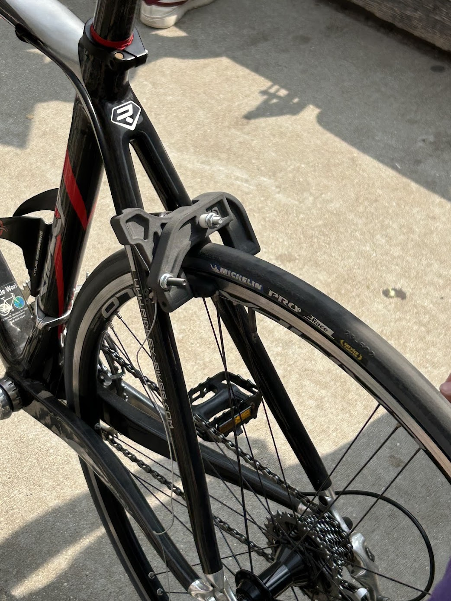
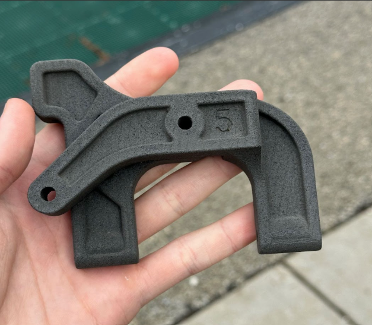
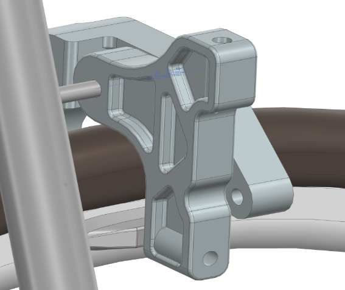
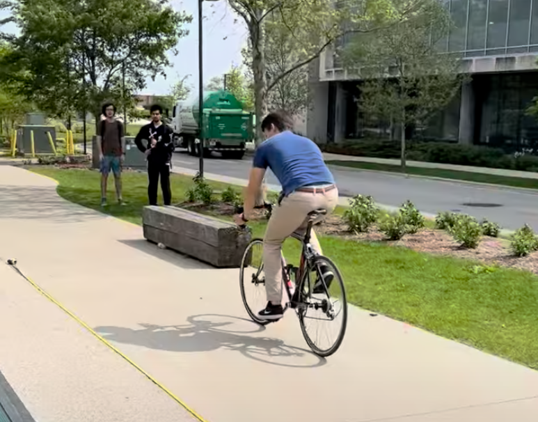
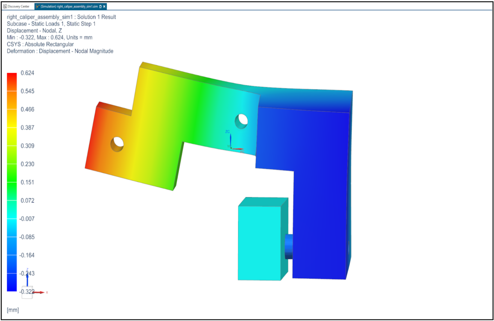
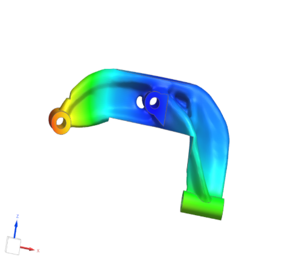
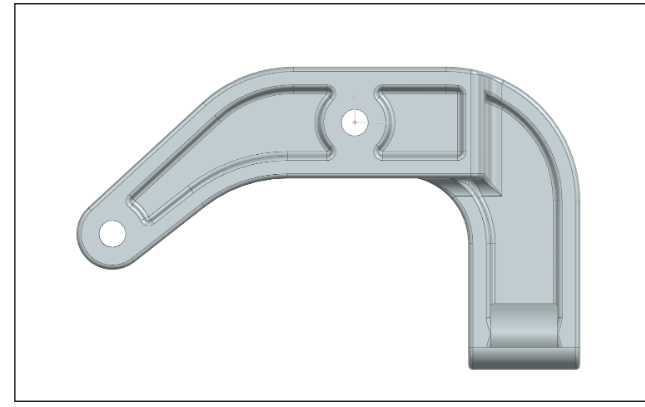

Create a set of pull-brake calipers using SLS printed parts that are within ISO safety standards, while reducing weight compared to a baseline design.
ME 240-1
Bike Brake Caliper Design

Context
I set out to redesign a traditional pull-brake caliper so it could be selective laser sintered (SLS) in nylon while still meeting international bike safety standards. This required balancing complex geometry for stiffness and strength with the realities of additive manufacturing and consumer safety regulations.
Goal

First iteration of SLS Nylon-12 brake calipers

NX CAD of the assembly

Our professor testing the brakes
Steps Taken
Research & Requirements
- Researched ISO 4210 and related bike safety standards to understand required load cases, factors of safety, and allowable deflection.
- Defined performance targets for stopping distance, maximum allowable stress, and weight relative to a reference caliper.
- Mapped boundary conditions and contact points to translate ISO test setups into analysis loads.
CAD & Structural Analysis
- Built the caliper geometry in Siemens NX, capturing cable paths, pad interfaces, and mounting hardware.
- Performed FEA in NX to evaluate stress distribution under peak braking loads and tune wall thickness and fillets.
- Ran topology optimization to remove low-stress material while maintaining stiffness and manufacturability.
Prototyping & Testing
- Printed multiple caliper iterations with SLS to validate fits, clearances, and cable routing.
- Built a bench test rig to apply controlled loads that replicate ISO conditions.
- Measured deformation and checked for cracking or permanent set after repeated load cycles.
Iteration & Refinement
- Adjusted rib thickness, fillet radii, and cable clamp geometry based on test results and print feedback.
- Re-ran FEA on each major revision to confirm the design’s margin over required strength.
- Documented print orientation, support strategy, and post-processing steps for consistent production.
Main Steps Taken

FEA on design space

Topology optimization

Final CAD
Results
Meets Safety Standards
Final design is safe according to ISO 4210, withstanding an applied pressure equivalent to 48 MPa at critical sections without failure.
Performance & Weight
The brake stops the test bike within 12.5 m in dry conditions and achieves a 12% reduction in weight from the first to the final iteration, improving both safety and ride feel.
The project demonstrates how additive manufacturing and topology optimization can be combined to create consumer-ready bike components that respect strict safety codes while delivering tangible performance gains.